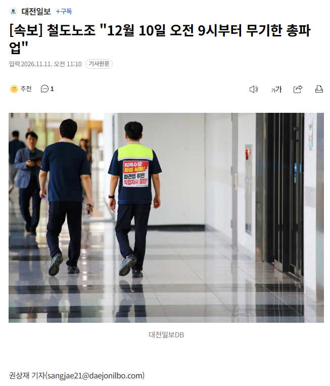

[속보] 철도노조 "12월 10일 오전 9시부터 무기한 총파업"
댓글
그 기관사분들 일하는거 엄청 힘들어보이긴 하더라
무인화 적극적으로 해줘야 하지 않나? 사람이 부족하다는데
그건또 반대 ㅋㅋ
코레일에서 기관차 운전하는 사람들은 극히 일부일걸;;
전국 선로 신호 전차선 기차 역운영 등등이 대다수지
요새도 특전사에서 차출해서 땜빵치나?
이번에는 제발 자회사 직고용은 하지 않기로 약속해요~~ ㅋㅋㅋㅋㅋ
투쟁
한달전 예고하는거보면 무조건 WWE 같은데
철도노조 파업은 좀 해도 된다.
이번 파업은 좀..